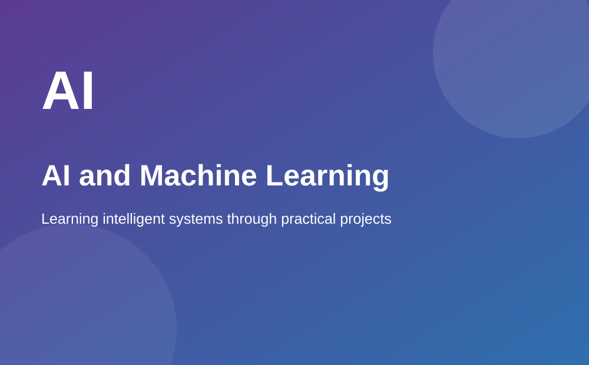

About Me
My name is Thirunavukkarasu Palaniappa, and I am currently pursuing a Master of Science in Computer Science at Georgia State University in Atlanta. My graduate studies have focused on technical areas including machine learning, deep learning, computer vision, and advanced algorithms.
I am interested in understanding how artificial intelligence and software engineering can be applied to practical problems. I enjoy working with programming languages and tools such as Python, Java, C++, SQL, JavaScript, PyTorch, TensorFlow, and Scikit-Learn.
My learning experience includes both academic and practical work. Through teaching and project activities, I have had opportunities to communicate technical ideas and work with different technologies. I also value careful experimentation, problem solving, and building systems that can be tested with real data.
I want to continue developing strong technical foundations while gaining more experience in software and AI projects. My goal is to keep improving through consistent learning, collaboration, and practical implementation. I believe technical growth comes from staying curious and being willing to learn from every challenge.

Navigate This Page
Technical Skills
The following list summarizes some of the technologies and technical areas included in my academic and project work.
- Machine Learning and Deep Learning
- Natural Language Processing
- Computer Vision and OpenCV
- Python, Java, C++, SQL, and JavaScript
- PyTorch, TensorFlow, and Scikit-Learn
- AWS, Google Cloud Platform, and Docker
- Flask, FastAPI, React, and Firebase
- Pandas, NumPy, MongoDB, ETL, and Data Visualization

My Top 5 Professional Goals
- Continue strengthening my foundation in machine learning and deep learning.
- Build reliable software systems that apply AI to practical problems.
- Gain additional experience with production-ready cloud and deployment workflows.
- Improve my research and technical communication skills through projects and collaboration.
- Contribute to meaningful work in AI, machine learning, and software engineering.
Technical Skills Summary
This table provides a structured overview of selected technical areas and tools.
| Technical Area | Tools or Technologies | Typical Focus |
|---|---|---|
| Machine Learning | PyTorch, TensorFlow, Scikit-Learn | Model development and evaluation |
| Computer Vision | OpenCV, transfer learning approaches | Image-based analysis |
| Programming | Python, Java, C++, SQL, JavaScript | Software development and problem solving |
| Cloud and DevOps | AWS, Google Cloud Platform, Docker | Deployment and scalable applications |
| Data Tools | Pandas, NumPy, MongoDB, ETL | Data processing and analysis |
A Principle I Value
“The important thing is not to stop questioning. Curiosity has its own reason for existing.”
Curiosity is important in technology because new problems often require new ways of thinking. Asking questions and testing ideas are important parts of both research and software development.
Useful External Resources
These external websites provide documentation and educational information for computer science and web development.
- Georgia State University - university information and academic resources.
- MDN Web Docs - documentation for HTML, CSS, and JavaScript.
- World Wide Web Consortium (W3C) - web standards and validation resources.